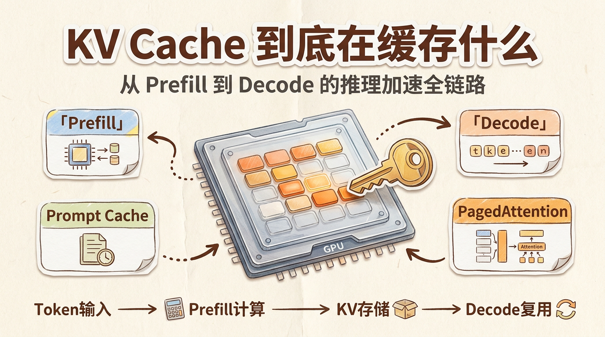
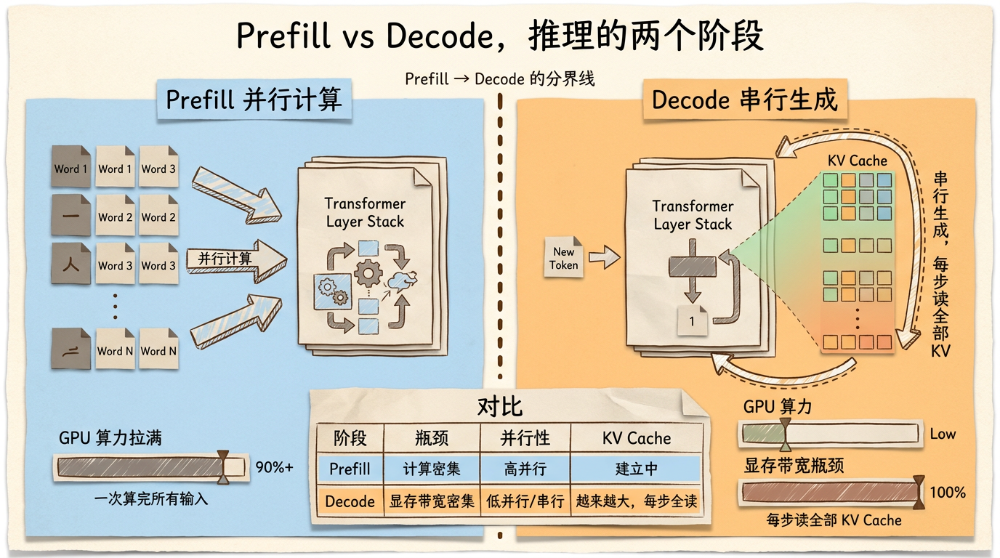
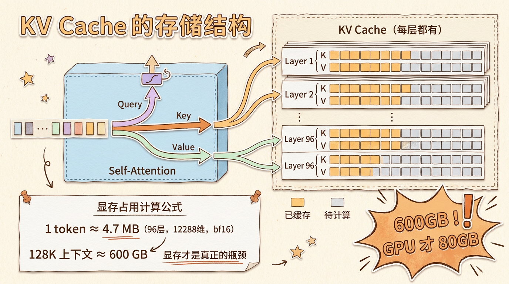
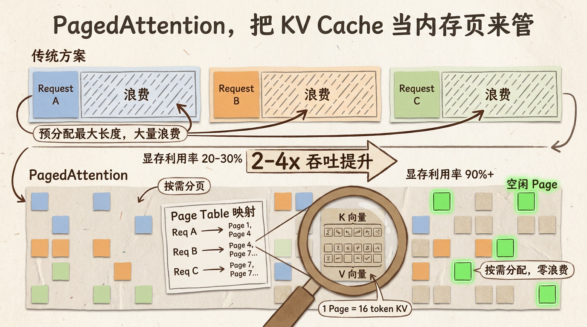
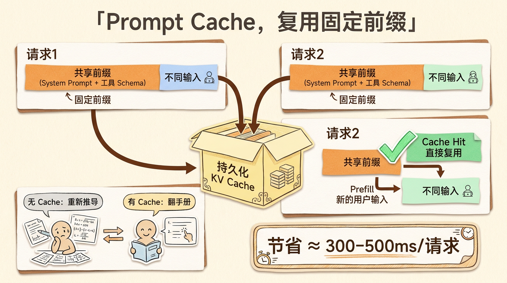
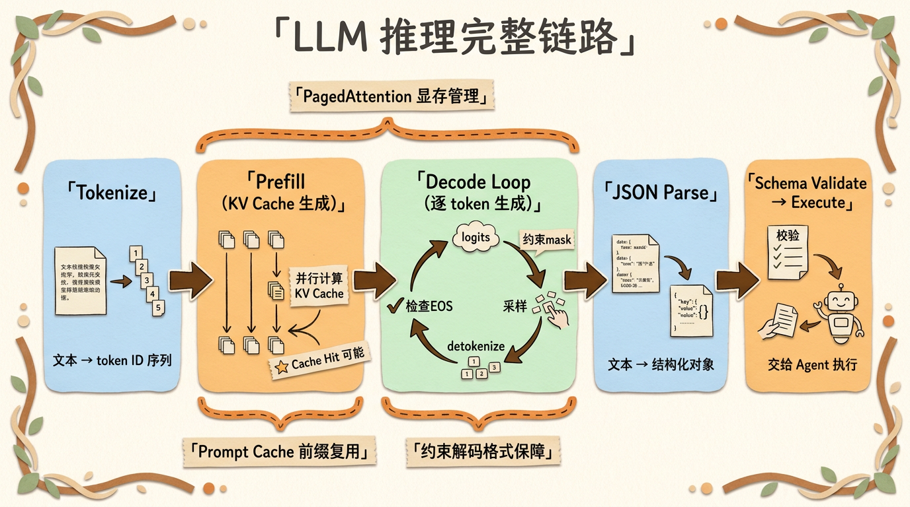

KV Cache 到底在缓存什么？从 Prefill 到 Decode 的推理加速全链路
很多人第一次听 KV Cache，会把它理解成”推理时缓存一下，所以更快”。
这个说法不能算错，但太粗了。
KV Cache 背后其实是一整套推理引擎的设计问题：Prefill 和 Decode 怎么拆，显存怎么管，多请求怎么调度，固定前缀怎么复用，结构化输出时怎么控制停机和采样。
今天就从一次请求的完整链路出发，把这些东西从头到尾理一遍。

先搞清楚一个问题，LLM 推理到底慢在哪
你给大模型发一条消息，等它回你。中间发生了什么？
模型收到你的全部输入 token，一个一个过 Transformer 层，算出每一层的注意力权重和前馈结果。这是第一阶段，叫 Prefill。
Prefill 阶段的特点是，所有输入 token 可以并行计算。因为它们彼此之间没有依赖关系（除了 attention 的因果 mask）。所以 GPU 在这个阶段利用率很高，吞吐量大。
但 Prefill 结束之后，模型要开始生成输出了。
每生成一个 token，它都需要回头看之前所有的 token（包括输入和已经生成的输出），用当前 token 的 Query 去和历史 Key/Value 做 attention。而且这次没法像 Prefill 那样一次性并行生成很多 token，因为第 i 个 token 的生成依赖于第 i-1 个 token 的结果。
这是第二阶段，叫 Decode。
Decode 阶段的特点是，每一步只生成一个 token，但每一步都要读取越来越长的历史 KV Cache，并完成当前 token 对历史上下文的 attention 计算。随着序列越来越长，每一步的显存读写压力会越来越大。
这就是 LLM 推理的核心瓶颈之一。没有 KV Cache 时，Decode 会反复计算历史 token 的 K/V；有了 KV Cache 之后，历史 K/V 不再重复计算，但每一步仍然要读取历史 KV 并做 attention，所以长序列生成依然很吃显存带宽。

KV Cache 到底缓存的是什么
Transformer 的注意力机制，核心操作基于 Query、Key、Value 三个向量组的交互计算。
Q 是当前 token 对”我要去哪里找信息”的查询向量。K 是每个 token “我有什么信息可以提供”的索引向量。V 是每个 token “我实际携带的信息内容”。
Attention 的计算过程是，拿 Q 去跟所有 K 做点积，得到一组权重，再用这组权重对所有 V 做加权求和。输出的就是当前 token 结合了上下文信息之后的表示。
这里有一个很关键的观察，在 Decode 阶段，每生成一个新 token 时，之前所有 token 的 K 和 V 向量其实是不变的。
因为 K 和 V 只取决于那个 token 本身以及它之前的上下文，跟后面的新 token 没有任何关系。
所以，如果我们在 Prefill 阶段把所有输入 token 的 K 和 V 向量都存下来，后面每一步 Decode 就只需要计算新 token 的 Q、K、V，然后把新的 K、V 追加到缓存里，用新 token 的 Q 去跟完整的 K、V 缓存做 attention 就行了。
这就是 KV Cache。缓存的不是模型参数，不是输入文本，而是每个 token 经过每一层 Transformer 之后产生的 Key 和 Value 向量。
一个具体的数字感受一下。假设模型有 96 层，隐藏维度 12288，用 bf16 存储每个浮点数占 2 字节。那么一个 token 在一层的 KV Cache 占用的空间是 2（K 和 V）× 12288 × 2 字节 ≈ 48 KB。96 层加起来，一个 token 的 KV Cache 大约 4.5 MB。
如果你的上下文窗口是 128K token，那一个请求的 KV Cache 就要占约 576 GB 的显存（这里假设的是标准 MHA，现代模型用 GQA 可以减少 4-8 倍）。
这个数字已经很离谱了。更离谱的是，GPU 的显存是有限的。常见 A100/H100 单卡显存是 80 GB 量级，H200 能到 141 GB 量级，但模型参数本身就要占掉一大半，留给 KV Cache 的空间仍然非常有限。
所以 KV Cache 的管理，本质上是一个显存资源管理问题。

Prefill 和 Decode 的矛盾
Prefill 和 Decode 这两个阶段，对硬件的需求完全相反。
Prefill 是计算密集型的。大量 token 并行过模型，GPU 的算力拉满，但每个 token 的 KV Cache 只需要算一次。这个阶段的瓶颈是计算速度。
Decode 是显存带宽密集型的。每一步只算一个 token，但要读取整个 KV Cache 做 attention。这个阶段的瓶颈不是算力，而是从显存往计算单元搬运数据的速度。
这就导致了一个很尴尬的局面。如果你用一个 GPU 同时做 Prefill 和 Decode，要么 Prefill 的时候 Decode 的请求在排队等，要么 Decode 的时候 GPU 算力大量闲置。
所以现代推理引擎里有两个常见优化方向。
第一件叫 Continuous Batching（连续批处理）。不再等一批请求全部完成才处理下一批，而是在每次迭代（iteration）级别动态调度。一个请求做完了就立刻换下一个进来，GPU 尽量不闲着。
第二件叫 Prefill-Decode Disaggregation（分离式推理）。更进一步，把 Prefill 和 Decode 放到不同的计算资源上，各干各的最擅长的活。
简单说就是，一批请求中，有的在做 Prefill，有的在做 Decode，推理引擎动态调度，让 GPU 尽量不闲着。更进一步，有些系统会把 Prefill 和 Decode 分离部署，减少两类负载互相干扰。
连续批处理已经是主流推理框架的基本能力。Prefill-Decode 分离也在 vLLM、TensorRT-LLM 等生态里逐步成熟，但它不是所有部署都会默认开启的能力。

PagedAttention，把 KV Cache 当内存页来管
KV Cache 最头疼的问题刚才说了，显存不够用。
传统做法是给每个请求预分配一块连续的显存，大小按最大上下文长度来。比如最大支持 4096 token，那就先分 4096 的空间，不管实际用多少。
这跟早期操作系统的内存管理一模一样。每个进程分一块固定大小的连续内存，用不用都得占着。
问题是，大多数请求根本用不到最大长度。一个简单的问答可能就 500 token，但你给它分了 4096 的空间。剩下的 3596 个位置全空着，别的请求还用不了。
vLLM 的 PagedAttention 借鉴了操作系统的虚拟内存分页机制来解决这个事。
核心思路是，把 KV Cache 的显存切成固定大小的 Page（比如每个 Page 存 16 个 token 的 KV）。每个请求维护一张 Page Table，记录自己的 KV 存在哪些 Page 里。Page 不需要连续，按需分配，用多少分多少。
这带来了几个好处。
第一，显存碎片问题解决了。不需要预分配大块连续空间，零散的 Page 都能利用起来。
第二，可以跑更多并发请求。因为显存利用率从原来的 20-30% 提升到了 90% 以上。
第三，给更灵活的调度打下基础。一个请求的 KV Cache 不再绑定一整块连续显存，推理引擎就更容易做 block 级别的分配、释放、共享和换入换出。至于跨 GPU 迁移或 CPU/GPU offload，还需要额外的系统机制配合。
vLLM 论文里的数字是，在相同硬件上，PagedAttention 相比传统方案吞吐量提升了 2-4 倍。主要就是靠减少了显存浪费，塞进了更多并发请求。
跟计算机科学的很多优化一样，好主意往往是跨界借来的。操作系统的虚拟内存分页，数据库的 Buffer Pool，垃圾回收的分代收集，思路都差不多，把稀缺资源切成小块，按需分配，减少浪费。
图片
Prompt Cache，复用固定前缀
搞清楚了 KV Cache 的存储和管理，接下来看一个更实际的问题。
很多 Agent 系统的请求有一个特点，System Prompt 是固定的。每次请求都带着同样的 8-10K token 的 System Prompt，里面是角色设定、工具定义、行为约束这些东西。
如果每次都重新算这些固定 token 的 KV，那就太浪费了。
Prompt Cache（或者叫 Prefix Caching）的思路很简单，既然 System Prompt 不变，那它算出来的 KV Cache 也不变，直接存下来，下次请求直接复用。
具体实现上，各家做法略有不同。
Anthropic 的 Prompt Caching 是显式标记的。你在 API 请求里把固定的部分用 cache_control 参数标记出来，API 这边会自动把这些部分的 KV Cache 存下来。下次请求如果前缀匹配，就直接命中 cache，跳过 Prefill。
DeepSeek 和 Gemini 也支持类似的前缀缓存能力。
OpenAI 的 Prompt Caching 是自动的。超过 1024 token 的固定前缀会被自动缓存，不需要显式标记；部分模型还支持通过 prompt_cache_retention 请求更长的缓存保留时间。
这里有一个很容易混淆的点。Prompt Cache 和 KV Cache 不是一回事。
KV Cache 是推理过程中自动产生的，每个请求都会有。它存的是这个请求所有历史 token 的 KV 向量，生命周期就是这个请求。
Prompt Cache 是跨请求复用的。它把多次请求中相同的固定前缀对应的计算结果缓存起来，让后续请求跳过这部分的 Prefill 计算。具体缓存介质和保留时间由服务商实现决定，不应该简单理解成永久持久化。
打个比方。KV Cache 是你做数学题时的草稿纸，算完一道题就扔了。Prompt Cache 是公式手册，把常用的公式提前印好，每次做题直接翻就行，不用重新推导。
对 Agent 系统来说，Prompt Cache 的收益非常大。我自己的项目里，System Prompt 大约 8-9K token，加上按 tag 加载的工具 Schema 和 Few-shot，固定前缀大约 1 万 token。这部分如果每次都 Prefill，大约需要 300-500ms。用了 Prompt Cache 之后直接命中，这 300-500ms 就省下来了。
在多轮对话的场景下，累积省下来的时间非常可观。

EOS Token，模型怎么知道该停了
聊完 Cache，再说一个跟推理密切相关但经常被忽略的东西。
LLM 生成文本的时候，它怎么知道一句话该结束了？
答案是一个特殊的 token，叫 EOS（End of Sequence）。每个模型都有一个预定义的 EOS token，比如 <|endoftext|> 或者 <|eot_id|>。模型生成到这个 token 时，就意味着这次生成该停了。
正常对话场景下，模型自然地输出 EOS 就好了。但在 Agent 系统里，事情没那么简单。
比如模型要输出一个 Function Call。它的输出结构大致是这样，先输出一个工具名，然后输出一串参数 JSON。如果模型在 JSON 还没输出完的时候生成了 EOS，那这个 JSON 就是不完整的，解析直接报错。
所以一些工具调用或结构化输出实现会做一件事情，在还没有形成完整结构之前，降低 EOS token 的概率，甚至直接 mask 掉，强制模型继续生成。
这就是所谓 的 EOS Suppression。
具体实现上，常见做法是在 logits 层面操作。模型每一步输出的 logits 是一个词表大小的向量，每个位置对应该 token 的原始分数。在做采样之前，推理引擎或解码器可以把 EOS token 对应的 logit 设为负无穷（或者一个非常小的负数），这样经过 softmax 之后它的概率就接近零了。
等到模型的输出匹配到了一个完整的 Function Call JSON 结构，再把 EOS 的限制放开，或者由外部 stop 条件直接结束生成。
这个过程和接下来要聊的约束解码其实是同一个思路的不同应用。
图片
约束解码，从 logits 层面硬控模型输出
Agent 系统里最头疼的问题之一，就是模型输出的 Function Call JSON 不合法。
可能是缺了个括号，可能是参数名拼错了，可能是多输出了一个逗号。对于传统的做法来说，Prompt 里写清楚格式要求，加 Few-shot 示范，再加上后置的 JSON 解析兜底。这些手段都有用，但解决不了根本问题。因为模型的本质是一个概率采样器，它每次选 token 都是在做概率选择，再小的概率只要不为零，就一定会发生。
约束解码（Constrained Decoding）换了一个思路。不从 Prompt 层面请求模型，而是直接在 logits 层面动手。
核心想法是，既然我们知道模型接下来应该输出什么格式（比如一个符合特定 JSON Schema 的字符串），那我们可以在每一步采样时，只保留那些”合法”的 token 候选。
具体怎么做？用一个有限状态机（FSM）或者上下文无关文法（CFG）来描述合法的输出格式。模型每输出一个 token，FSM 就往前走一步。然后根据 FSM 当前状态，计算出下一步允许的 token 集合。在 logits 上，把这个集合之外的 token 全部 mask 掉（logit 设为负无穷）。这样模型只能从合法 token 中采样，输出就一定符合预定义的格式。
举个简单的例子。假设当前期望的输出是 JSON 的一个字符串键名 "name"。那么当前状态允许的 token 只有 " 和字母。如果模型这时候想输出一个 {，直接被 mask 掉，概率为零。想输出数字？也 mask 掉。
Outlines 是这个方向最有名的开源库。它把 JSON Schema 转成一个正则表达式对应的有限状态机，然后在每一步解码时动态调整 logits。llama.cpp 也内置了 Grammar-based 的约束解码功能。vLLM 则支持通过 guided decoding 参数传入 JSON Schema，在推理时自动应用约束。
这个技术对 Agent 系统的意义是巨大的。因为 Agent 的工具调用是一个高频操作，每次都需要模型输出结构化的 JSON。如果千分之一的概率输出错误 JSON，在一天几千次调用的规模下，就是每天几次的执行失败。用了约束解码之后，这个数字可以降到几乎为零。
图片
一张图总结整个推理链路
把上面这些东西串起来，一次完整的 LLM 推理过程是这样的。
第一步，Tokenize。把用户的输入文本转成 token ID 序列。
第二步，Prefill。所有 token 通过 Transformer 前向传播，算出每一层的 KV Cache。如果命中 Prompt Cache，固定前缀的 KV 直接复用，只 Prefill 新增部分。
第三步，Decode 循环。每一步，把上一步生成的 token（连同 KV Cache）送入模型。模型输出 logits 向量。如果开启了约束解码，根据 FSM 当前状态 mask 掉不合法 token。采样选出一个 token ID。Detokenize 回文本。检查是否是 EOS token。如果是，生成结束。如果不是，继续循环。
第四步，后处理。完整的输出文本经过 JSON Parser 解析，提取出 Function Call 或普通文本回复，返回给调用方。
整个过程中，KV Cache 的管理贯穿始终。PagedAttention 负责高效存储，Prompt Cache 负责前缀复用，Continuous Batching 负责请求调度。约束解码在采样环节把关，确保输出格式正确。EOS Suppression 在工具调用期间防止过早终止。
这些技术不是孤立存在的，它们是一条完整的链路，每一步都在解决一个具体的问题。理解了这条链路，再去做 Agent 架构、推理优化或线上问题排查，才不会只停留在”调 API”这一层。

写在最后
用 API 和理解原理是两回事。你天天调接口，不代表你知道接口背后发生了什么。就像你天天开车，不代表你懂发动机。
但这两个层面的理解都很重要。理解了原理，你才知道为什么 Prompt Cache 能省时间，为什么约束解码比 Few-shot 更可靠，为什么非流式请求在 Agent 场景下其实是更合理的选择。
这些东西不是概念装饰。而是当你真正理解了推理链路的每一个环节，你在设计 Agent 架构的时候，才能做出更好的决策。
以上，既然看到这里了，如果觉得不错，随手点个赞、在看、转发三连吧，如果想第一时间收到推送，也可以给我个星标⭐~
谢谢你看我的文章，我们，下次再见。
/ 参考资料
vLLM: Efficient Memory Management for Large Language Model Serving with PagedAttention (Kwon et al., 2023)
Outlines: Fast and Structured Text Generation (Willard et al., 2023)
Anthropic Prompt Caching Documentation
The Illustrated Transformer (Jay Alammar)
vLLM、TensorRT-LLM、llama.cpp 官方文档